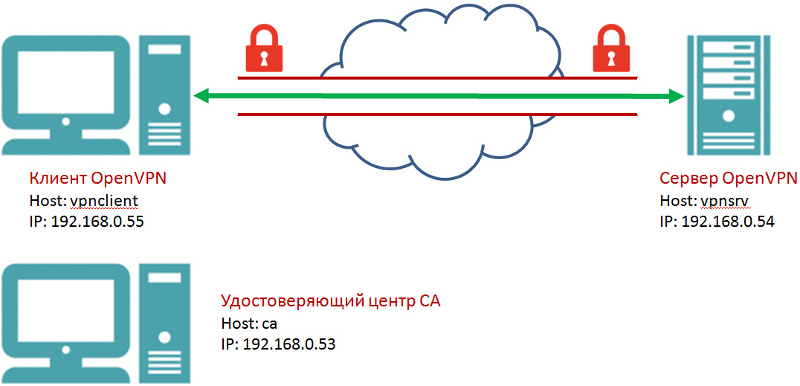
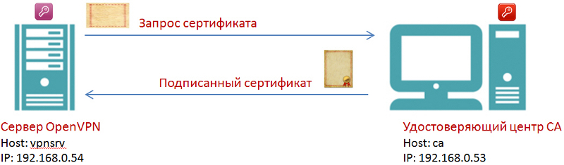
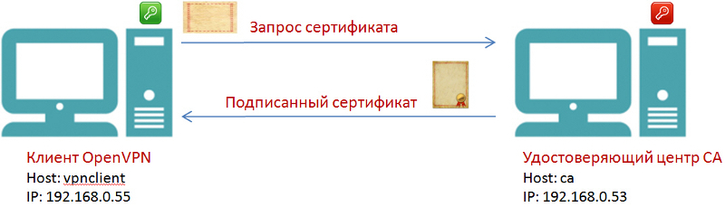

Руководство по установке и настройке OpenVPN
Когда у нас появились сотрудники, работающие удаленно, пришлось думать над тем, как обеспечить им защищенный доступ к нашим хостинговым серверам, виртуальным выделенным серверам разработчиков Virtual Dedicated Server (VDS), сайтам обеспечения и сопровождения разработки и к другим ресурсам.
По соображениям безопасности доступ к этим ресурсам ограничен при помощи межсетевого экрана (файервола) по портам и адресам IP. Ежедневную перенастройку доступа при изменении динамических IP сотрудников едва ли можно назвать разумным решением.
Выход нашелся довольно быстро — это использование технологии виртуальных частных сетей Virtual Private Network (VPN) и ее свободной реализации OpenVPN. Эта реализация доступна практически для всех распространенных платформ, в том числе для планшетов и смартфонов. История развития OpenVPN насчитывает уже 12 лет (компания OpenVPN Technologies, Inc. была создана Francis Dinha и James Yona в 2002 году), так что это надежное и проверенное временем решение.
В нашей компании сеть VPN позволила предоставить защищенный доступ сотрудников к VDS, играющей роль сервера OpenVPN. И уже для фиксированного IP этого сервера был разрешен доступ к другим ресурсам компании. Попутно на сервере OpenVPN был установлен прокси Squid, что решило все проблемы доступа сотрудников с динамическими IP к защищенным ресурсам компании.
Теме OpenVPN посвящены многочисленные статьи и сообщения на форумах. Тем не менее, нужную информацию мне пришлось собирать по частям из разных мест. Попутно приходилось разбираться с многочисленными терминами и технологиями. В качестве серверов OpenVPN были использованы VDS на базе FreeBSD и Debian Linux, в качестве клиентов — рабочие станции FreeBSD, Debian Linux, Ubuntu и Microsoft Windows.
Надеюсь, что эта статья будет полезна тем, кто впервые столкнулся с необходимостью создания сети VPN или уже использует ее для решения тех или задач, а также тем, кто ищет замену коммерческим реализациям VPN.
С благодарностью приму замечания и предложения по содержимому статьи.
Немного теории
Если раньше для создания безопасного канала передачи данных крупным компаниям и организациям приходилось прокладывать (либо арендовать) кабели и защищать их от физического доступа злоумышленников, то теперь в этом нет необходимости. С помощью VPN можно создавать защищенные виртуальные каналы, работающие через безопасный "туннель" в Интернете. Такое решение может позволить себе любая, даже очень небольшая компания.
Конечно, если предъявляются повышенные требования к защите данных, необходимо применять сертифицированные средства и обращаться к специалистам. Однако уровень защиты, обеспечиваемый OpenVPN, позволяет использовать эту технологию для многих коммерческих приложений.
Почему сеть VPN называется виртуальной и частной?
Виртуальная она потому, что узлы сети объединяются не физическими линиями, а виртуальными соединениями, которые создаются программным обеспечением (ПО) VPN.
Сеть VPN частная, так как к ней могут подключаться только узлы компании, создавшей эту сеть, а не все желающие. На каждом узле сети VPN должно работать ПО VPN. Еще там должны находиться ключи и сертификаты, обеспечивающие узлам доступ к сети VPN и криптографическую защиту передаваемых данных.
Таким образом, сеть VPN может объединять ресурсы (серверы и рабочие станции) компании в единую безопасную виртуальную сеть, созданную на базе Интернета. И теперь сотрудники, работающие удаленно (из дома или из другой страны) будут находиться как бы в общей сети своей компании. Сеть VPN подходит и для консолидации территориально разделенных офисов компании.
Обмен данными по сети
ПО OpenVPN передает данные по сети с помощью протоколов UDP или TCP с применением драйвера TUN/TAP. Протокол UDP и драйвер TUN позволяет подключаться к серверу OpenVPN клиентам, расположенным за NAT.
Для OpenVPN можно выбрать произвольный порт, что позволяет преодолевать ограничения файервола, через который осуществляется доступ из локальной сети в Интернет (если такие ограничения установлены).
Безопасность и шифрование
Безопасность и шифрование в OpenVPN обеспечивается библиотекой OpenSSL и протоколом транспортного уровня Transport Layer Security (TLS). Вместо OpenSSL в новых версиях OpenVPN можно использовать библиотеку PolarSSL. Протокол TLS представляет собой усовершенствование протокола защищенной передачи данных уровня защищенных сокетов Secure Socket Layers (SSL).
В OpenSSL может использоваться симметричная и ассиметричная криптография.
В первом случае перед началом передачи данных на все узлы сети необходимо поместить одинаковый секретный ключ. При этом возникает проблема безопасной передачи этого ключа через небезопасный Интернет.
Во втором случае у каждого участника обмена данными есть два ключа — публичный (открытый) и приватный (секретный).
Публичный ключ используется для зашифрования данных, а приватный — для расшифрования. В основе шифрования лежит довольно сложная математика. Выбранный в SSL/TLS алгоритм зашифрования публичным ключом обеспечивает возможность расшифрования только с помощью приватного ключа.
Приватный ключ секретный, и должен оставаться в пределах узла, на котором он создан. Публичный ключ должен передаваться участникам обмена данными.
Для безопасной передачи данных необходимо идентифицировать стороны, принимающие участие в обмене данными. В противном случае можно стать жертвой так называемой "атаки посредника" (Man in the Middle, MITM). В ходе такой атаки злоумышленник подключается к каналу передачи данных и прослушивает его. Он также может вмешиваться, удалять или изменять данные.
Чтобы обеспечить аутентификацию (проверку подлинности пользователя) протокол TLS использует инфраструктуру публичных ключей (Public Key Infrastructure, PKI) и асимметричную криптографию.
Нужно осознавать, что расшифрование данных без наличия приватного ключа тоже возможно, например, методом последовательного перебора. Хотя такой метод и требует больших вычислительных ресурсов, это только вопрос времени, когда данные смогут быть расшифрованы.
Хотя размер ключа влияет на сложность расшифрования, никакой ключ не дает гарантии полной безопасности данных. Кроме того, существует возможность похищения уже расшифрованных данных и ключей за счет уязвимостей и закладок в операционной системе или прикладном ПО, а также в аппаратном обеспечении серверов и рабочих станций.
Шифрование данных увеличивает трафик и замедляет обмен данными. Чем больше длина ключа, применяемого для шифрования данных, тем труднее будет его подобрать, но и тем заметнее получится замедление обмена данными.
Сертификаты и удостоверяющий центр CA
Как мы уже сказали, при ассиметричной криптографии открытый ключ используется для зашифрования данных, а закрытый — для расшифрования. Чтобы избежать подделки открытого ключа, какая-то третья сторона должна его заверить. В результате этой процедуры создается так называемый сертификат открытого ключа.
Сертификат должна заверить организация, которой доверяют. Эта организация играет роль удостоверяющего центра (Certification authority, CA).
Если создается открытый ключ для публичного использования, в качестве удостоверяющего центра должна выступать коммерческая или государственная организация с неоспоримой репутацией. Эта организация публикует собственный открытый ключ, доступный всем.
Существует немало коммерческих организаций, выпускающих сертификаты, пригодные, например, для создания HTTPS-сайтов, для цифровой подписи сообщений электронной почты или документов, для систем мгновенного обмена сообщениями, такими как Jabber. Эти сертификаты выдаются на ограниченный срок и стоят денег.
Но для сети VPN, создаваемой для своей компании, вы можете самостоятельно создать свой удостоверяющий центр CA и выпускать так называемые самоподписанные сертификаты. Конечно, доверие к таким сертификатам не будет выходить за рамки вашей компании, но во-первых, этого будет вполне достаточно, а во-вторых, самоподписанные сертификаты совершенно бесплатны.
Самоподписанные сертификаты и будут играть роль публичных ключей, с помощью которых узлы вашей сети OpenVPN будут зашифровывать данные. Для расшифрования данных будут использованы приватные ключи.
Сертификаты создаются в соответствии со стандартом X.509. Этот стандарт определяет форматы данных и процедуры распределения открытых ключей с помощью сертификатов, снабженных электронными подписями.
Сертификат X.509 — это публичный ключ, содержащий такие данные, как субъект, владеющий сертификатом, имя узла, период действия, алгоритм и значение подписи сертификата, и т.д. Сертификат должен быть подписан приватным ключом удостоверяющего центра (Certification authority, CA).
Когда наш узел рабочей станции подключается к удаленному узлу (серверу) с использованием протокола TLS, сервер отправляет ему сертификат X.509. На нашем узле есть публичный ключ удостоверяющего центра CA, который подписал этот сертификат. Этот ключ используется для проверки подписи.
Таким образом, имеется способ проверки удаленного узла (сервера), к которому наш узел собирается подключиться, чтобы исключить "атаки посредника" MITM.
Список отзыва сертификатов
Иногда требуется блокировать доступ отдельных узлов к сети VPN компании, например, заблокировать доступ рабочей станции уволенного сотрудника.
Для упрощения этой процедуры в OpenVPN предусмотрен список отзыва сертификатов (Сertificate Revocation List, CRL) и простые средства для управления этим списком.
Список CRL создается в удостоверяющем центре CA и потом копируется на сервер OpenVPN. После внесения изменений в список CRL его необходимо повторно скопировать на сервер OpenVPN.
Файл Диффи-Хелмана
Файл Диффи-Хелмана (Diffie-Hellman) необходим для реализации одноименного протокола, позволяющего использовать небезопасный канал для получения общего секретного ключа. Этот ключ будет в дальнейшем использоваться для защищенного обмена данными с помощью алгоритмов симметричного шифрования.
В применении к OpenVPN файл Диффи-Хелмана нужен для обеспечения защиты трафика от расшифровки, если ключи были похищены. Здесь имеется в виду тот трафик, который был записан и сохранен еще до похищения ключей.
Файл Диффи-Хелмана создается на сервере OpenVPN.
Статический ключ HMAC
Статический ключ (хэш-код) аутентификации сообщений (Hash-based Message Authentication Code, HMAC) обеспечивает проверку подлинности информации, передаваемой между сторонами. Этот ключ создается на сервере OpenVPN с целью дополнительной защиты от DoS-атак и флуда.
Компоненты сети OpenVPN
Прежде чем мы перейдем от теории к практике, перечислим основные компоненты сети OpenVPN и объекты, с которыми нам придется иметь дело.
Удостоверяющий центр CA
Выдает сертификаты по запросу узлов сети VPN, подписанные сертификатом удостоверяющего центра. Предоставляет узлам сети VPN свой собственный сертификат для проверки удостоверяющей стороны. Управляет списком отзыва сертификатов CRL.
Сервер OpenVPN
ПО сервера OpenVPN создает туннель внутри незащищенной сети, например, Интернета. Этот туннель обеспечивает безопасный зашифрованный трафик между узлами — участниками обмена данными в сети OpenVPN.
Клиент OpenVPN
ПО клиента OpenVPN устанавливается на все узлы, которым необходим защищенный канал передачи данный с сервером OpenVPN. При соответствующей настройка сервера OpenVPN возможна защищенная передача данных между клиентами OpenVPN, а не только между клиентами и сервером OpenVPN.
Сертификаты (публичные ключи) X.509
Сертификаты X.509 представляют собой публичные ключи, заверенные удостоверяющим центром CA. Они используются для зашифровывания данных. Факт заверения сертификата удостоверяющим центром CA позволяет идентифицировать сторону, передающую зашифрованные данные.
Файл запроса на сертификат создается на узлах сети, затем он переносится на узел удостоверяющего центра и там подписывается. Созданный в результате подписанный сертификат переносится обратно на запросивший его узел сети OpenVPN.
Приватные ключи
Приватные ключи секретные. Они должны создаваться и храниться на каждом узле сети OpenVPN, предназначены для расшифрования данных и никогда не должны передаваться по сети.
Приватные ключи создаются на узлах сети OpenVPN одновременно с файлом запроса на получение сертификата.
Список отзыва сертификатов CRL
Содержит список сертификатов, утративших доверие. Он создается и редактируется на узле удостоверяющего центра CA. Чтобы отключить узел от сети, достаточно занести его сертификат в список CRL.
После создания и каждого изменения список CRL переносится на серверы OpenVPN.
Файл Диффи-Хелмана
Используется, чтобы в случае похищения ключей исключить расшифрование трафика, записанного еще до этого похищения. Создается на сервере OpenVPN.
Статический ключ HMAC
Служит для проверки подлинности передаваемой информации. Обеспечивает защиту от DoS-атак и флуда. Создается на сервере OpenVPN.
Готовим оборудование для установки OpenVPN
Если вы впервые настраиваете сеть VPN, лучше всего экспериментировать на виртуальных машинах VDS. Это могут быть VDS, созданные локально на вашем компьютере или на сервере в вашей сети, либо арендованные у провайдера. Перед арендой VDS поинтересуйтесь, поддерживается ли драйвер TUN/TAP. Некоторые провайдеры требуют дополнительной оплаты для подключения TUN/TAP.
На рис. 1. мы показали схему стенда, на котором будем устанавливать компоненты и узлы OpenVPN (имена и адреса IP хостов могут быть другими).

Рис. 1. Стенд для изучения OpenVPN.
Здесь изображены три узла (хоста), для каждого из которых потребуется отдельный VDS:
Хосты клиента и сервера VPN соединены обычным, небезопасным каналом. В случае макета это может быть локальная сеть, в реальной жизни — канал сети Интернет. ПО OpenVPN создает в этой сети канал, обозначенный на рис. 1 красным цветом, внутри которого устанавливается безопасный шифрованный канал (обозначен зеленым цветом).
В макете хост удостоверяющего центра CA можно подключить к вашей локальной сети. Для реальной работы хост CA нужно отсоединить от сети, а обмен сертификатами и ключами осуществлять с помощью, например, USB флэш-диска.
Если к безопасности предъявляются повышенные требования, хост CA необходимо поместить в охраняемое помещение — расположенная на этой машине информация позволяет создавать ключи доступа к вашей сети VPN.
Мы проводили установку серверов OpenVPN в среде ОС Debian Linux и FreeBSD, клиентов OpenVPN в ОС Debian Linux, FreeBSD и Microsoft Windows.
Основная часть статьи посвящена установке компонентов OpenVPN для Debian Linux. Далее мы рассмотрим особенности установки для FreeBSD и Microsoft Windows.
По возможности на узлах сети OpenVPN используйте новые версии ОС. Перед тем как приступить к работе с OpenVPN, обновите пакеты Linux:
# apt-get update
# apt-get upgrade
Установите на всех узлах пакет пакет zip, если он не был установлен ранее:
# aptitude install zip
Этот пакет будет нужен для распаковки архива утилиты Easy-RSA, с помощью которой мы будем создавать ключи и сертификаты.
На всех узлах настройте обновление и синхронизацию времени.
# apt-get install ntpdate
# apt-get install -y ntp
# /etc/init.d/ntp stop
# ntpdate pool.ntp.org
# /etc/init.d/ntp start
Синхронизация времени необходима, т.к. сертификаты имеют период действия. Если часы, например, на хосте удостоверяющего центра CA и сервера OpenVPN не синхронны, может получиться так, что выданный удостоверяющим центром сертификат не будет действителен на узлах сети OpenVPN из-за ограничений по дате или времени.
Дальнейшие работы мы начнем с подготовки хоста удостоверяющего центра CA. Затем установим хосты сервера и клиента OpenVPN.
Создание удостоверяющего центра CA
Как мы уже говорили, задача удостоверяющего центра CA — выдача подписанных сертификатов для сервера и клиентов OpenVPN.
Чтобы получить сертификат, сервер или клиент на своем хосте генерирует файл запроса на сертификат. Этот файл запроса передается на хост CA, который создает сертификат и подписывает его. Далее подписанный сертификат передается на запросивший хост.
Одновременно с запросом сертификата создается приватный ключ. Приватные ключи создаются для всех узлов сети OpenVPN: для удостоверяющего центра CA, для сервера и всех клиентов OpenVPN.
Для безопасности файлы ключей никогда не должны покидать узлы, где они были созданы. Обмениваться можно только запросами на сертификаты и сертификатами, приватными ключами обмениваться нельзя и незачем.
На рис. 2 показан процесс получения подписанного сертификата для сервера OpenVPN.

Рис. 2. Получение сертификата для сервера OpenVPN
Сервер OpenVPN создает свой приватный ключ и файл запроса на получение сертификата. Файл запроса передается в удостоверяющий центр, например, на USB флеш-диске.
Удостоверяющий центр на основе запроса создает подписанный сертификат, который затем требуется перенести на сервер OpenVPN, также на USB флэш-диске.
Если к безопасности не предъявляется особых требований или вы только изучаете OpenVPN, можно подключить машину удостоверяющего центра к сети и передавать запросы и сертификаты, например, с помощью утилит SFTP или SCP. Можно даже совместить функции CA и, например, сервера OpenVPN в одном хосте.
Аналогичным образом необходимо получить сертификаты для всех клиентских узлов (рис. 3).

Рис. 3. Получение сертификата для клиента OpenVPN
Установка утилиты Easy-RSA
Все операции по созданию ключей и сертификатов можно выполнить с помощью утилиты openssl. Однако проще воспользоваться специально созданной для этого программой Easy-RSA, которая использует openssl для выполнения действий с ключами и сертификатами.
Ранее утилита Easy-RSA поставлялась вместе с OpenVPN, но теперь это отдельный проект.
Все операции с удостоверяющим центром и сертификатами можно (и нужно) проводить от имени непривилегированного пользователя.
Создайте пользователя с именем, например, ca и перейдите в его домашний каталог:
# adduser ca
# su ca
$ cd
Загрузите дистрибутив программы утилитой wget.
$ wget https://github.com/OpenVPN/easy-rsa/archive/master.zip
После загрузки распакуйте архив master.zip:
$ unzip master.zip
В табл. 1 перечислены файлы и каталоги, входящие в дистрибутив Easy-RSA.
Таблица 1. Состав дистрибутива Easy-RSA.
|
Файл или каталог |
Описание |
|
COPYING |
Информация о лицензии |
|
ChangeLog |
Журнал изменений |
|
Licensing |
Каталог с файлом текста лицензии |
|
README |
Краткая информация о программе Easy-RSA |
|
README.quickstart.md |
Краткое руководство по работе с Easy-RSA |
|
Build |
Скрипт для создания дистрибутива |
|
Distro |
Этот каталог содержит файлы для Windows |
|
Doc |
Документация Easy-RSA |
|
easyrsa3 |
Каталог с программой Easy-RSA |
|
release-keys |
Ключ GPG Key ID, использованный для подписи дистрибутива |
Мы рекомендуем ознакомиться с файлом README.quickstart.md, а также с файлами из папки Doc. Для создания ключей и сертификатов нужно перейти в каталог easyrsa3, где находится исполнимый файл программы Easy-RSA.
Создание инфраструктуры публичных ключей PKI
На первом шаге создайте инфраструктуру публичных ключей (Public Key Infrastructure, PKI):
$ cd /home/ca/easy-rsa-master/easyrsa3
$ ./easyrsa init-pki
Вы увидите сообщение:
init-pki complete; you may now create a CA or requests.
Your newly created PKI dir is: /home/ca/easy-rsa-master/easyrsa3/pki
В результате выполнения команды init-pki был создан каталог /home/ca/easy-rsa-master/easyrsa3/pki, где и находится инфраструктура публичных ключей PKI.
На втором шаге с помощью команды build-ca создайте удостоверяющий центр CA:
$ ./easyrsa build-ca
В ответ на эту команду вам будет предложено ввести пароль и так называемое имя Common Name:
Generating a 2048 bit RSA private key
.....+++
................................................................+++
writing new private key to '/home/ca/easy-rsa-master/easyrsa3/pki/private/ca.key'
Enter PEM pass phrase:********
Verifying - Enter PEM pass phrase:********
----You are about to be asked to enter information that will be incorporated
into your certificate request.
What you are about to enter is what is called a Distinguished Name or a DN.
There are quite a few fields but you can leave some blank
For some fields there will be a default value,
If you enter '.', the field will be left blank.
-----
Common Name (eg: your user, host, or server name) [Easy-RSA CA]:ca.mydomain.ru>
CA creation complete and you may now import and sign cert requests.
Your new CA certificate file for publishing is at:
/home/ca/easy-rsa-master/easyrsa3/pki/ca.crt
Пароль будет защищать приватный ключ удостоверяющего центра, созданный в формате PEM (Privacy Enhancement for Internet Electronic Mail). Этот пароль потребуется каждый раз, когда вы будете подписывать в удостоверяющем центре сертификаты для серверов и клиентов OpenVPN.
Чтобы избавиться от необходимости ввода пароля, можно при запуске команды build-ca задать опцию nopass:
$ ./easyrsa build-ca nopass
Учтите, что злоумышленник сможет легко воспользоваться украденным ключом, созданным без пароля.
В качестве Common Name задайте, например, доменное имя, выделенное для удостоверяющего центра CA, имя пользователя или хоста сервера CA.
Для удостоверяющего центра команда build-ca создаст два файла:
/home/ca/easy-rsa-master/easyrsa3/pki/private/ca.key
/home/ca/easy-rsa-master/easyrsa3/pki/ca.crt
Файл ca.key представляет собой приватный ключ центра CA, он секретный, и его нельзя переносить на другие узлы вашей сети.
Файл сертификата удостоверяющего центра ca.crt, напротив, открытый, и он будет нужен на узлах серверов и клиентов OpenVPN. Запишите файл ca.crt на USB флэш-диск, чтобы перенести на другие узлы.
Смонтировать USB флэш-диск, можно, например, так:
# fdisk -l
# mkdir /mnt/flash
# mount -t vfat /dev/sdb1 /mnt/flash
Здесь мы предполагаем, что USB флэш-диск стал устройством /dev/sdb1, а его файловая система — FAT32.
Копируем файл сертификата CA:
# cp /home/ca/easy-rsa-master/easyrsa3/pki/ca.crt /mnt/flash/ca.crt
Для работы с USB флэш-диском с файловой системой NTFS сначала установите пакет ntfs-3g:
# aptitude install ntfs-3g
Смонтируйте диск следующим образом:
# mount -t ntfs-3g /dev/sdb1 /mnt/flash
После окончания копирования размонтируйте USB диск:
# umount /mnt/flash
Создание списка отзывов сертификатов
Если сотрудник уволился, необходимо заблокировать его доступ в сеть VPN компании. Специально для этой цели в OpenVPN предусмотрен список отзыва сертификатов CRL. Создайте его такой командой:
$ cd /home/ca/easy-rsa-master/easyrsa3
$ ./easyrsa gen-crl
У вас будет запрошен пароль доступа к приватному ключу ca.key удостоверяющего центра. Список отзыва сертификатов будет создан в файле /home/ca/easy-rsa-master/easyrsa3/pki/crl.pem.
Скопируйте этот файл на USB флэш-диск:
# cp /home/ca/easy-rsa-master/easyrsa3/pki/crl.pem /mnt/flash
Если нужно заблокировать выданный ранее сертификат, воспользуйтесь следующей командой:
$ ./easyrsa revoke developer5
Здесь мы отозвали сертификат для клиента developer5. Далее нужно скопировать новый файл CRL на сервер OpenVPN и перезапустить демон OpenVPN.
Созданные файлы и каталоги PKI
В табл. 2 мы привели краткое описание некоторых файлов и каталогов PKI, созданных в результате наших действий.
Таблица 2. Структура каталога PKI.
|
Файл или каталог |
Описание |
|
ca.crt |
Сертификат удостоверяющего центра CA, не секретный |
|
crl.pem |
Список отзыва сертификатов CRL |
|
issued |
Каталог с сертификатами, созданными удостоверяющим центром CA, не секретный |
|
private |
Каталог с секретными приватными ключами |
|
Reqs |
Каталог запросов на сертификаты, не секретный |
Справка по утилите Easy-RSA
Запустите утилиту Easy-RSA без параметров:
$ ./easyrsa
На экране появится список всех команд утилиты, а также полный путь к программе и к PKI.
Для того чтобы получить справку по нужной команде, добавьте опцию help. Например, так можно получить справку по команде build-ca:
$ ./easyrsa help build-ca
Создание сервера OpenVPN
Процесс создания сервера OpenVPN включает в себя установку пакета openvpn, подготовку файлов конфигурации, ключей и сертификатов.
Установка пакета openvpn
Установите пакет сервера OpenVPN следующим образом:
# apt-get install openvpn
Подготовка файлов конфигурации
Файлы конфигурации, сертификаты и ключи нужно поместить в каталог /etc/openvpn, который будет создан автоматически в процессе установки пакета openvpn.
Прежде всего, подготовим файлы конфигурации openssl.cnf и server.conf. Первый из этих файлов определяет конфигурацию OpenSSL, второй — конфигурацию сервера OpenVPN.
В комплекте с утилитой Easy-RSA поставляется пример файла конфигурации OpenSSL (предполагается, что мы установили утилиту в домашний каталог пользователя ca):
/home/ca/easy-rsa-master/easyrsa3/openssl-1.0.cnf
Мы, однако, рекомендуем использовать для начала упрощенную версию этого файла из нашей статьи.
В файле openssl.cnf указан абсолютный путь к каталогу с ключами и сертификатами, который вы только что создали.
Содержимое файла openssl.cnf
Пример файла openvpn.conf конфигурации сервера OpenVPN есть на сайте проекта по адресу openvpn.net/index.php/open-source/documentation/howto.html#server. Мы предлагаем начать с сокращенной версии этого файла из нашей статьи.
Содержимое файла server.conf
Чтобы запуск сервера OpenVPN произошел успешно, необходимо создать каталоги, сертификаты и ключи, на которые есть ссылки в файлах openssl.cnf и server.conf, а также пользователя openvpn.
Создайте каталог для журнала сервера OpenVPN:
# mkdir /var/log/openvpn/
Создайте каталог для конфигураций клиентов (пока не используем):
# mkdir /etc/openvpn/ccd
Подготовка сертификата и ключа для сервера OpenVPN
Помимо openssl.cnf и openvpn.conf в каталоге /etc/openvpn/ нам потребуются файлы, перечисленные в табл. 3.
Таблица 3. Файлы для сервера OpenVPN.
|
Файл |
Описание |
|
dh.pem |
Файл Диффи-Хелмана для защиты трафика от расшифровки |
|
ca.crt |
Сертификат удостоверяющего центра CA |
|
server.crt |
Сертификат сервера OpenVPN |
|
server.key |
Приватный ключ сервера OpenVPN, секретный |
|
crl.pem |
Список отзыва сертификатов CRL |
|
ta.key |
Ключ HMAC для дополнительной защиты от DoS-атак и флуда |
Прежде всего мы создадим приватный ключ и файл запроса на сертификат для сервера OpenVPN, а также получим по созданному запросу в удостоверяющем центре CA подписанный сертификат. В результате у нас появятся файлы server.crt и server.key. Далее займемся остальными файлами, перечисленными в табл. 3.
Чтобы создать для сервера OpenVPN запрос на сертификат и приватный ключ, нам потребуется установить на сервер OpenVPN программу Easy-RSA, аналогично тому, как мы это делали для удостоверяющего центра CA.
Установку Easy-RSA, генерацию приватного ключа сервера OpenVPN и запроса на сертификат мы будем делать от имени пользователя vpnoperator, не имеющего привилегий администратора. Добавьте этого пользователя перед началом работ:
# adduser vpnoperator
Прежде всего, устанавливаем на сервере OpenVPN утилиту Easy-RSA и запускаем инициализацию инфраструктуры публичных ключей PKI:
$ cd /home/vpnoperator
$ wget https://github.com/OpenVPN/easy-rsa/archive/master.zip
$ unzip master.zip
$ cd /home/vpnoperator/easy-rsa-master/easyrsa3
$ ./easyrsa init-pki
После успешной инициализации PKI в консоли появится сообщение:
init-pki complete; you may now create a CA or requests.
Your newly created PKI dir is: /home/vpnoperator/easy-rsa-master/easyrsa3/pki
Так как наш сервер OpenVPN не будет играть роль удостоверяющего центра, то после инициализации PKI мы не будем создавать CA командой build-ca.
Инфраструктура PKI будет создана в каталоге /home/vpnoperator/easy-rsa-master/easyrsa3/pki.
На следующем этапе получим запрос на сертификат и приватный ключ сервера OpenVPN:
$ ./easyrsa gen-req server
Этой командой будет создан файл запроса server.req и приватного ключа server.key. В процессе генерации у вас будет запрошен пароль, а также имя Common Name для сервера OpenVPN:
Generating a 2048 bit RSA private key
...............................................................................................................+++
....................................+++
writing new private key to '/home/vpnoperator/easy-rsa-master/easyrsa3/pki/private/server.key'
Enter PEM pass phrase:******
Verifying - Enter PEM pass phrase:******
-----
You are about to be asked to enter information that will be incorporated
into your certificate request.
What you are about to enter is what is called a Distinguished Name or a DN.
There are quite a few fields but you can leave some blank
For some fields there will be a default value,
If you enter '.', the field will be left blank.
-----
Common Name (eg: your user, host, or server name) [server]: vpn-server
Keypair and certificate request completed. Your files are:
req: /home/vpnoperator/easy-rsa-master/easyrsa3/pki/reqs/server.req
key: /home/vpnoperator/easy-rsa-master/easyrsa3/pki/private/server.key
Первый из этих файлов нам нужно передать на сервер удостоверяющего центра CA, он не секретный. Второй файл — секретный, и он не должен покидать пределы сервера OpenVPN.
Как мы уже говорили, безопаснее всего передавать запрос на сертификат через USB флеш-диск, чтобы не подключать сервер CA к сети:
# fdisk -l
# mkdir /mnt/flash
# mount -t vfat /dev/sdb1 /mnt/flash
# cp /home/vpnoperator/easy-rsa-master/easyrsa3/pki/reqs/server.req /mnt/flash/server.req
# umount /mnt/flash
Заметим, что при генерации приватного ключа был запрошен пароль. Этот пароль обеспечивает защиту, если приватный ключ будет скомпрометирован (украден злоумышленником). Пароль приватного ключа OpenVPN будет запрашиваться с консоли каждый раз при загрузке сервера и запуске OpenVPN.
Но что делать, если у вас нет доступа к консоли сервера OpenVPN или этот доступ затруднен? Такое может случиться, например, если вы создали сервер OpenVPN на базе VDS, арендованного у провайдера, не предоставляющего консольный доступ.
В этой ситуации можно создать приватный ключ без пароля с помощью опции nopass:
$ ./easyrsa gen-req server nopass
Итак, вы создали приватный ключ сервера OpenVPN и запрос на сертификат.
Смонтируйте USB флэш-диск на хосте удостоверяющего центра CA, а затем импортируйте от имени пользователя ca запрос в PKI:
# mount -t vfat /dev/sdb1 /mnt/flash
# su ca
$ cd /home/ca/easy-rsa-master/easyrsa3
$ ./easyrsa import-req /mnt/flash/server.req vpn-server
Здесь мы указали сокращенное имя запроса на сертификат как "vpn-server". Это сокращенное имя будет использовано в дальнейших операциях с сертификатом.
После удачного импорта запроса вы увидите следующее сообщение:
The request has been successfully imported with a short name of: vpn-server
You may now use this name to perform signing operations on this request.
Если ошибок нет, подписываем запрос на получение сертификата:
./easyrsa sign-req server vpn-server
В процессе создания подписанного сертификата будет запрошено подтверждение (ответьте на него "yes"), а также пароль приватного ключа удостоверяющего центра CA:
You are about to sign the following certificate.
Please check over the details shown below for accuracy. Note that this request has not been cryptographically verified. Please be sure it came from a trusted source or that you have verified the request checksum with the sender.
Request subject, to be signed as a server certificate for 3650 days:
subject=
commonName = server
Type the word 'yes' to continue, or any other input to abort.
Confirm request details: yes
Using configuration from /home/ca/easy-rsa-master/easyrsa3/openssl-1.0.cnf
Enter pass phrase for /home/ca/easy-rsa-master/easyrsa3/pki/private/ca.key:******
Check that the request matches the signature
Signature ok
The Subject's Distinguished Name is as follows
commonName :ASN.1 12:'server'
Certificate is to be certified until Jun 26 15:48:25 2024 GMT (3650 days)
Write out database with 1 new entries
Data Base Updated
Certificate created at: /home/ca/easy-rsa-master/easyrsa3/pki/issued/vpn-server.crt
Теперь сертификат получен, и он находится на сервере удостоверяющего центра в файле home/ca/easy-rsa-master/easyrsa3/pki/issued/vpn-server.crt. Этот файл нам нужно передать на сервер OpenVPN.
Скопируйте через USB флеш-диск файл сертификата /ca/easy-rsa-master/easyrsa3/pki/issued/vpn-server.crt с сервера удостоверяющего центра в файл на сервере OpenVPN /home/vpnoperator/vpn-server.crt:
# cp /home/ca/easy-rsa-master/easyrsa3/pki/issued/vpn-server.crt /mnt/flash/
Затем смонтируйте USB диск на VDS OpenVPN и скопируйте файлы ca.crt сертификата CA, список отзыва сертификатов crl.pem и сертификат vpn-server.crt сервера OpenVPN в каталог /etc/openvpn:
# mount -t vfat /dev/sdb1 /mnt/flash
# cp /mnt/flash/ca.crt /etc/openvpn
# cp /mnt/flash/crl.pem /etc/openvpn
# cp /mnt/flash/vpn-server.crt /etc/openvpn
# umount /mnt/flash
Файл приватного ключа скопируйте из каталога usr/home/vpnoperator/easy-rsa-master/easyrsa3/pki/private/ в каталог /etc/openvpn/:
# cp /home/vpnoperator/easy-rsa-master/easyrsa3/pki/private/server.key /etc/openvpn
Генерация файла Диффи-Хелмана
Создайте ключи Диффи-Хелмана следующей командой:
$ cd /home/vpnoperator/easy-rsa-master/easyrsa3
$ ./easyrsa gen-dh
Команда gen-dh работает довольно долго. По завершении вы увидите сообщение:
DH parameters of size 2048 created at /home/vpnoperator/easy-rsa-master/easyrsa3/pki/dh.pem
Скопируйте файл/home/vpnoperator/easy-rsa-master/easyrsa3/pki/dh.pem в каталог /etc/openvpn/ :
# cp /home/vpnoperator/easy-rsa-master/easyrsa3/pki/dh.pem /etc/openvpn
Создание статического ключа HMAC
Для создания ключа HMAC используйте команду openvpn с опциями --genkey и --secret:
# cd /etc/openvpn
# openvpn --genkey --secret ta.key

Запишите файл ta.key на USB диск:
# cp /etc/openvpn/ta.key /mnt/flash
Ревизия файлов перед запуском OpenVPN
Итак, мы получили из удостоверяющего центра подписанный сертификат сервера OpenVPN, сертификат самого удостоверяющего центра CA, список отзыва сертификатов, создали файл Диффи-Хелмана и ключ HMAC.
Перед тем как запустить демон OpenVPN, нам нужны в каталоге /etc/openvpn/ для Linux или /usr/local/etc/openvpn/ для FreeBSD следующие файлы:
Добавление пользователя openvpn
Добавьте непривилегированного пользователя и группу openvpn, от имени которого будет работать демон сервера OpenVPN:
# adduser --system --no-create-home --home /nonexistent --disabled-login --group openvpn
Запуск демона OpenVPN
Запустите демон OpenVPN следующей командой:
# /etc/init.d/openvpn start
Проверка результата запуска демона OpenVPN
Если сервер OpenVPN стартовал без ошибок, убедитесь с помощью команды ifconfig в том, что появился интерфейс TUN:
# ifconfig
...
tun0 Link encap:UNSPEC HWaddr 00-00-00-00-00-00-00-00-00-00-00-00-00-00-00-00
inet addr:10.15.0.1 P-t-P:10.15.0.1 Mask:255.255.255.0
UP POINTOPOINT RUNNING NOARP MULTICAST MTU:1500 Metric:1
RX packets:0 errors:0 dropped:0 overruns:0 frame:0
TX packets:0 errors:0 dropped:0 overruns:0 carrier:0
collisions:0 txqueuelen:100
RX bytes:0 (0.0 B) TX bytes:0 (0.0 B)
Как мы уже говорили, использование TUN/TAP на арендованных VDS может потребовать дополнительной оплаты.
Если все хорошо, то в интерфейсе tun появился адрес IP 10.15.0.1. Это адрес сервера OpenVPN в нашем защищенном туннеле, заданный в файле конфигурации server.conf.
После проверки наличия интерфейса TUN убедитесь, что OpenVPN занял порт 1194:
# netstat -ltupn | grep 1194
Если демон запустился нормально и порт 1194 занят сервером OpenVPN, можно переходить к установке клиента OpenVPN, описанной в следующем разделе статьи. При возникновении ошибок проанализируйте журнал /var/log/openvpn/openvpn-server.log.
При установке OpenVPN на Linux с новыми ядрами, начиная с 2.6, интерфейс TUN может не появится. При этом в логах появляется ошибка:
Loading kernel module for a network device with CAP_SYS_MODULE (deprecated). Use CAP_NET_ADMIN and alias netdev-tun instead
Чтобы избавиться от проблемы, добавьте в файл /etc/modprobe.d/dist.conf строку:
alias netdev-tun tun
Если такого файла нет, его следует создать. После внесения изменений в файл /etc/modprobe.d/dist.conf перезагрузите ОС.
Степень детализации журнала зависит от параметра verb файла конфигурации server.conf. Параметр verb может принимать значения от 0 до 11, при этом 11 соответствует максимальной детализации, а значение по умолчанию равно 1. Если значение параметра verb равно 0, то в журнал будут записываться сообщения только о наиболее серьезных, фатальных ошибках.
Для отладки установите значение этого параметра, равным 5 или выше.
Установка и запуск ПО клиента OpenVPN
Процедура установки клиента OpenVPN аналогична процедуре установки сервера OpenVPN. Основные отличия в файлах конфигурации. Перед установкой не забудьте обновить пакеты и порты.
# apt-get install openvpn
Подготовка файлов конфигурации
Файлы конфигурации, ключи и сертификаты должны находится в каталоге /etc/openvpn.
Далее подготовьте файлы конфигурации openssl.cnf и server.conf.
Файл openssl.cnf, определяющий конфигурацию OpenSSL, используйте точно такой же, как и для сервера OpenVPN. Что касается файла server.conf для клиента OpenVPN, то для начала возьмите его из нашей статьи.
Содержимое файла server.conf для клиента OpenVPN
Обратите внимание на параметр remote, в котором указан адрес IP сервера OpenVPN:
remote 192.168.0.54 1194
Вы должны указать здесь реальный адрес IP вашего сервера OpenVPN, чтобы клиент OpenVPN смог к нему подключиться.
Создайте каталог для журнала клиента OpenVPN:
# mkdir /var/log/openvpn/
Создание инфраструктуры публичных ключей PKI
Подключитесь к хосту клиента OpenVPN (в нашем случае это хост разработчика ПО) с правами обычного пользователя developer1 и скачайте утилиту Easy-RSA с сайта github.com/OpenVPN/easy-rsa.
$ cd /home/developer1
$ wget https://github.com/OpenVPN/easy-rsa/archive/master.zip
$ unzip master.zip
Запустите инициализацию инфраструктуры публичных ключей PKI:
$ cd /home/developer1/easy-rsa-master/easyrsa3
$ ./easyrsa init-pki
В результате будет подготовлен каталог PKI:
/home/developer1/easy-rsa-master/easyrsa3/pki
Подготовка сертификата и ключа для клиента OpenVPN
Создайте запрос на сертификат и приватный ключ рабочей станции разработчика developer1:
$ ./easyrsa gen-req client nopass
Вам потребуется ввести имя Common Name для создания запроса на сертификат и приватного ключа рабочей станции:
Generating a 2048 bit RSA private key
..............................................................................................+sftp++
................................+++
writing new private key to '/home/developer1/easy-rsa-master/easyrsa3/pki/private/client.key'
-----
You are about to be asked to enter information that will be incorporated into your certificate request.
What you are about to enter is what is called a Distinguished Name or a DN.
There are quite a few fields but you can leave some blank
For some fields there will be a default value,
If you enter '.', the field will be left blank.
-----
Common Name (eg: your user, host, or server name) [client]:developer1
Keypair and certificate request completed. Your files are:
req: /home/developer1/easy-rsa-master/easyrsa3/pki/reqs/client.req
key: /home/developer1/easy-rsa-master/easyrsa3/pki/private/client.key
Если к защите данных предъявляются повышенные требования, создавайте приватный ключ с паролем, без использования опции nopass:
$ ./easyrsa gen-req client
В этом случае, однако, пароль приватного ключа будет запрашиваться каждый раз при загрузке хоста и запуске клиента OpenVPN.
Теперь вам потребуется перенести созданный запрос сертификата /home/developer1/easy-rsa-master/easyrsa3/pki/reqs/client.req на хост удостоверяющего центра CA и записать в файл /home/ca/client.req.
Сделайте это с помощью USB флэш-диска, если хост CA не подключен к сети.
Запишите запрос на USB диск:
# mkdir /mnt/flash
# mount -t vfat /dev/sdb1 /mnt/flash
# cp /home/developer1/easy-rsa-master/easyrsa3/pki/reqs/client.req /mnt/flash
# umount /mnt/flash
Импортируйте запрос в PKI, используя в качестве короткого имени developer1:
$ cd /home/ca/easy-rsa-master/easyrsa3
$ ./easyrsa import-req /mnt/flash/client.req developer1
Далее подпишите запрос на получение сертификата:
$ ./easyrsa sign-req client developer1
После ввода подтверждения и пароля приватного ключа CA будет создан сертификат:
/home/ca/easy-rsa-master/easyrsa3/pki/issued/developer1.crt
Запишите файл developer1.crt на USB флэш-диск, чтобы перенести его на хост клиента OpenVPN.
# cp /home/ca/easy-rsa-master/easyrsa3/pki/issued/developer1.crt /mnt/flash
# umount /mnt/flash
Скопируйте файл сертификата в каталог /etc/openvpn:
# mount -t vfat /dev/sdb1 /mnt/flash
# cp /mnt/flash/developer1.crt /etc/openvpn
Итак, теперь у нас есть файл приватного ключа рабочей станции client.key и файл сертификата developer1.crt, подписанного удостоверяющим центром CA.
Скопируйте файл ключа в каталог /etc/openvpn:
# cp /home/developer1/easy-rsa-master/easyrsa3/pki/private/client.key /etc/openvpn
Скопируйте в каталог /etc/openvpn клиента VPN следующие файлы, подготовленные на USB диске:
# cp /mnt/flash/ca.crt /etc/openvpn
# cp /mnt/flash/crl.pem /etc/openvpn
# cp /mnt/flash/ta.key /etc/openvpn
Напомним, что файлы ca.crt и crl.pem были созданы на хосте удостоверяющего центра CA, а файл ta.key — на хосте сервера OpenVPN.
Запуск клиента OpenVPN
Запустите демон следующей командой:
# /etc/init.d/openvpn start
Если возникла проблема с запуском клиента, проверьте содержимое журнала /var/log/openvpn/openvpn-client.log
В том случае, когда демон клиента запустился без ошибок, проверьте наличие интерфейса TUN, аналогично тому, как мы это делали при запуске демона сервера OpenVPN.
# ifconfig
...
tun0 Link encap:UNSPEC HWaddr 00-00-00-00-00-00-00-00-00-00-00-00-00-00-00-00
inet addr:10.15.0.2 P-t-P:10.15.0.2 Mask:255.255.255.0
UP POINTOPOINT RUNNING NOARP MULTICAST MTU:1500 Metric:1
RX packets:0 errors:0 dropped:0 overruns:0 frame:0
TX packets:0 errors:0 dropped:0 overruns:0 carrier:0
collisions:0 txqueuelen:100
RX bytes:0 (0.0 B) TX bytes:0 (0.0 B)
Проверьте также, что сервер OpenVPN откликается на команду ping по адресу 10.15.0.1:
# ping 10.15.0.1
Установка прокси-сервера Squid
Итак, у нас есть сеть VPN, и сотрудники, работающие удаленно, могут подключаться к VDS сервера OpenVPN с помощью безопасного туннеля. Теперь нам нужно организовать доступ сотрудников к защищенным ресурсам компании через прокси-сервер, установленный на сервер OpenVPN. В этом случае рабочие станции сотрудников с динамическими адресами IP смогут подключаться к ресурсам компании, для которых разрешен доступ с фиксированного адреса IP сервера OpenVPN.
В качестве прокси-сервера мы выбрали ПО с открытым исходным кодом Squid, который часто применяется, в частности, для кэширования Web-страниц в высоконагруженных проектах. Нам, однако, сейчас пригодится только его функция проксирования.
Установку Squid проще всего выполнить из пакета:
# apt-get install squid3
После завершения установки в каталоге /etc/squid3 будет создан файл конфигурации squid.conf внушительных размеров, который необходимо отредактировать. Впрочем, в нашем случае требуется внести лишь очень небольшие изменения.
Прежде всего, отыщите в файле squid.conf следующую строку:
http_access deny all
Перед этой строкой добавьте:
acl allowed_hosts src 10.15.0.0/24
http_access allow allowed_hosts
http_access deny manager
Первая из этих строк разрешает доступ к Squid из вашей сети OpenVPN.
Если требуется проксировать доступ к каким-либо нестандартным портам SSL, добавьте их к строке:
acl SSL_ports port 443
Например, здесь мы добавили нестандартный порт 7195:
acl SSL_ports port 443 7195
Убедитесь, что в файле squid.conf разрешен доступ из сети 10.0.0.0/8. По умолчанию там есть такая строка:
acl localnet src 10.0.0.0/8 # RFC1918 possible internal network
После завершения редактирования файла конфигурации перезапустите Squid:
# /etc/init.d/squid3 restart
Журналы Squid помогут при отладке, если что-то пойдет не так. Они находятся в каталоге /var/log/squid3. Это файлы access.log и cache.log.
После установки и запуска Squid пропишите в браузере прокси 10.15.0.1, порт 3128. Если все настроено правильно, браузер будет ходить в Интернет через ваш сервер OpenVPN. В этом можно убедиться, например, посетив сайт 2ip.ru, myip.ru или аналогичный, показывающий IP-адрес посетителя.
Особенности установки на FreeBSD
Перед началом работ обновите порты FreeBSD:
# portsnap fetch
# portsnap extract
Также позаботьтесь о настройке синхронизации времени на узлах сети OpenVPN. Однократная синхронизация выполняется так:
# ntpdate 1.pool.ntp.org
Вы можете добавить эту команду в задание cron. Также для синхронизации можно установить демон ntpd.
Установка утилиты Easy-RSA
Для загрузки дистрибутива используйте команду fetch:
$ fetch --no-verify-peer https://github.com/OpenVPN/easy-rsa/archive/master.zip
Опция --no-verify-peer позволяет избавиться от ошибки, которая возникает при проверке сертификата digicert.com в FreeBSD версии 10.0. FreeBSD версии 9.2 проверяет данный сертификат успешно, там эта опция не нужна.
В остальном приемы работы с утилитой Easy-RSA в среде FreeBSD ничем не отличаются от приемов работы в среде Debian Linux.
Установка сервера и клиента OpenVPN
Запустите установку OpenVPN на хосте сервера и клиентов OpenVPN из портов следующем образом:
# сd /usr/ports/security/openvpn
# make install clean
Файлы конфигурации OpenVPN
Файлы конфигурации сервера OpenVPN при его установке в ОС FreeBSD необходимо размещать в каталоге /usr/local/etc/openvpn.
Создайте этот каталог:
# mkdir /usr/local/etc/openvpn
Файлы конфигурации openssl.cnf и server.conf содержат путь к каталогу /usr/local/etc/openvpn.
Файл openssl.cnf
Содержимое файла server.conf для сервера OpenVPN
Содержимое файла server.conf для клиента OpenVPN
Создайте каталог для конфигураций клиентов:
# mkdir /usr/local/etc/openvpn/ccd
Работа с инфраструктурой PKI
Установите на сервере OpenVPN утилиту Easy-RSA и запустите инициализацию инфраструктуры публичных ключей PKI:
$ cd /home/vpnoperator
$ fetch https://github.com/OpenVPN/easy-rsa/archive/master.zip
$ unzip master.zip
$ cd /home/vpnoperator/easy-rsa-master/easyrsa3
$ ./easyrsa init-pki
В процессе передачи файлов запроса на сертификаты и подписанные сертификаты вы можете использовать USB флэш-диск. Ниже приведены команды для монтирования и размонтирования диска:
# ls /dev/da*
# mount_msdosfs /dev/da1s1 /mnt
# umount /mnt
Здесь предполагается, что для USB флэш-диска выделено устройство /dev/da1s1.
Добавление пользователя openvpn
С помощью команды adduser добавьте пользователя openvpn. В качестве Shell для этого пользователя укажите nologin.
Запуск демона OpenVPN
Создайте каталог для записи журнала демона OpenVPN:
# mkdir /var/log/openvpn
Добавьте в файл /etc/rc.conf строки:
openvpn_enable="YES"
openvpn_configfile="/usr/local/etc/openvpn/server.conf"
Здесь указан путь к рабочему файлу конфигурации демона OpenVPN.
Запустите демон OpenVPN:
# /usr/local/etc/rc.d/openvpn start
При успешном запуске на сервере и клиенте OpenVPN должен появится интерфейс TUN. Убедитесь в этом с помощью команды ifconfig:
# ifconfig
...
tun0: flags=8051<UP,POINTOPOINT,RUNNING,MULTICAST> metric 0 mtu 1500
options=80000<LINKSTATE>
inet6 fe80::20c:29ff:fe28:d4be%tun0 prefixlen 64 scopeid 0x3
inet 10.15.0.1 --> 10.15.0.1 netmask 0xffffff00
nd6 options=21<PERFORMNUD,AUTO_LINKLOCAL>
Opened by PID 493
Проверьте, что демон сервера OpenVPN занял порт 1194:
# sockstat | grep 1194
Если при запуске возникли ошибки, изучите журнал. Путь к файлу журнала задан в файле конфигурации демона OpenVPN.
Установка SQUID
В среде ОС FreeBSD мы выполнили установку Squid из портов:
# cd /usr/ports/www/squid33
# make install clean
Файл конфигурации Squid находится в каталоге /usr/local/etc/squid/ и называется squid.conf. В него надо внести такие же изменения, что и в случае установки для Debian Linux.
Для запуска добавьте в файл /etc/rc.conf строку:
squid_enable="YES"
Чтобы запустить Squid, используйте следующую команду:
/usr/local/etc/rc.d/squid start
Особенности установки клиента OpenVPN в Microsoft Windows
Для тех сотрудников, кто использует на своих рабочих станциях ОС Microsoft Windows, мы настроили доступ к серверу OpenVPN с помощью ПО OpenVPN-GUI. Дистрибутив OpenVPN-GUI можно скачать здесь.
Установка OpenVPN-GUI
Выберите вариант загрузки Windows Installer (64-bit) или Windows Installer (32-bit) в зависимости от разрядности вашей версии ОС Microsoft Windows. Далее запустите полученный файл и выполните установку по умолчанию. Файлы конфигурации, сертификаты и ключи необходимо записать в папку C:\Program Files\OpenVPN\config.
В папку C:\Program Files\OpenVPN\easy-rsa устанавливается версия программы Easy-RSA для Windows.
Краткую инструкцию по использованию Easy-RSA для Windows вы найдете в файле C:\Program Files\OpenVPN\easy-rsa\README.txt
Мы рассмотрим вариант, при котором запрос на сертификат создается на хосте Microsoft Windows, а затем передается через USB флэш-диск на хост удостоверяющего центра CA. Там на основании запроса создается подписанный файл сертификата и, опять же, через USB флэш-диск, передается на хост Microsoft Windows.
Создание запроса на сертификат
Перейдем к процедуре создания запроса на сертификат.
Прежде всего, запустите консоль с правами администратора. Для удобства вместо стандартной консоли Microsoft Windows мы использовали бесплатный эмулятор консоли ConEmu-Maximus5.
Запустив консоль, перейдите в каталог Easy-RSA и выполните команды:
cd C:\Program Files\OpenVPN\easy-rsa
init-config.bat
clean-all
В результате будет создан каталог C:\Program Files\OpenVPN\easy-rsa\keys и файл vars.bat.
Отредактируйте в файле vars.bat строки по примеру, приведенному ниже, указав код своей страны KEY_COUNTRY и региона KEY_PROVINCE, название города KEY_CITY, компании KEY_ORG, адрес электронной почты KEY_EMAIL и название отдела KEY_OU:
set KEY_COUNTRY=RU
set KEY_PROVINCE=RU
set KEY_CITY=Moscow
set KEY_ORG=IT-Company
set KEY_EMAIL=develop@itcompany.ru
set KEY_CN=changeme
set KEY_NAME=changeme
set KEY_OU=IT
Создайте приватный ключ хоста и запрос на сертификат:
vars
build-ca
build-key client
Ответьте на вопросы, аналогичные тем, что задаются при создании ключей и сертификатов для узлов OpenVPN в Debian Linux или FreeBSD.
После этого в каталоге C:\Program Files\OpenVPN\easy-rsa\keys будет создан файл запроса сертификата client.csr, сертификат client.crt и файл приватного ключа клиента client.key.
Из этих файлов нам потребуются только два — запрос сертификата client.csr и приватный ключ client.key. Сертификат client.crt подписан приватным ключом хоста Microsoft Windows, созданным командой build-ca, и не подойдет для работы с нашим сервером OpenVPN. Тут необходим сертификат, созданный нашим удостоверяющим центром CA.
Получение сертификата от удостоверяющего центра CA
Скопируйте файл запроса сертификата client.csr через USB флэш-диск на хост удостоверяющего центра и создайте запрос, аналогично тому, как мы это делали для клиента OpenVPN на базе Debian Linux. Запишите полученный сертификат на USB флэш-диск, чтобы перенести его на хост Microsoft Windows.
Создание файла конфигурации клиента OpenVPN
Создайте файл конфигурации клиента OpenVPN в каталоге C:\Program Files\OpenVPN\config. Расширение имени этого файла должно быть ovpn. Вот пример нашего файла:
client
dev tun
proto udp
remote 192.168.0.54 1194
tls-client
ca "key/ca.crt"
cert "key/developer-w1.crt"
key "key/client.key"
tls-auth "key/ta.key" 1
comp-lzo
tun-mtu 1500
mssfix 1450
verb 3
Здесь предполагается, что мы скопировали в каталог C:\Program Files\OpenVPN\config\key следующие файлы:
Запуск OpenVPN-GUI
Запустите OpenVPN-GUI как обычное приложение Windows с помощью кнопки Пуск (существует также возможность запуска OpenVPN-GUI в качестве службы). В панели системных задач (в системном «трее», или в панели System Tray) появится значок OpenVPN-GUI в виде небольшого окна с замком.
Щелкните этот значок правой клавишей мыши и выберите имя файла конфигурации, который вы создали в каталоге C:\Program Files\OpenVPN\config. Если все настроено правильно, на экране появится окно соединения, в котором будут отображаться сообщения.
После успешного соединения изображение окна с замком станет зеленого цвета. Это означает, что канал VPN установлен. В случае возникновения проблем читайте сообщения в окне подключения, а также журнал сервера OpenVPN. В большинстве случаев проблемы связаны с ошибками при подготовке сертификатов и ключей.
Чтобы разъединить канал OpenVPN, щелкните значок OpenVPN-GUI правой клавишей мыши и выберите из меню строку Отключиться.